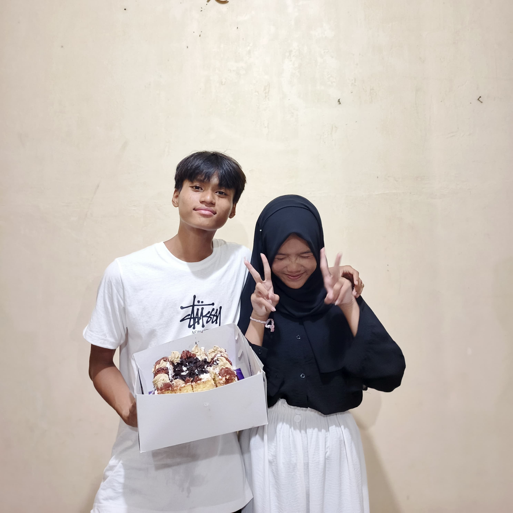

hallo icha udah lama kita engak ketemu yah :), semoga kau suka pemberianku ini walau tidak seberapa, dan ada beberapa kata untukmu, selamat membaca 👋
mungkin selama pengalaman ku bersamamu selama 7-8 bulan, aku merasakan sebuah rasa sayang yang mungkin belum pernah aku rasakan, walau begitu pasti ada beberapa hal yang membuat kita berdua berkelahi dan berseteru :(, tapi semua itu tetap membuatku merasa dekat denganmu.
Mungkin kau pernah mikir aku tidak pernah memikirkanmu. Sebenarnya, aku sbrnya cuma sulit mengekspresikan perasaanku saja. Aku lebih sering memendam, hanya bisa merindukanmu dalam diam, kau tau sendirikan aku itu pemalu atau pendiem. Jujur saja, aku selalu memikirkanmu setiap hari. Mau tidur, main HP, mandi, bahkan saat tidak melakukan apa-apa, kau tetap ada di pikiranku. Rasanya kek sulit buat kau hilang dari pikiranku. Aku tahu mungkin kamu berpikir, "Nopal sudah tidak sayang lagi, sudah jarang chat sama aku." Tapi tolong jangan berpikir begitu. Aku masih sangat sayang sama kamu. Aku bukan tidak mau chat kau, hanya saja sering bingung harus mulai dari mana, mau membuka topik apa. Jadi terkadang aku hanya diam, meski sebenarnya rinduku besar sekali.
Mungkin aku bukan orang yang sempurna untukmu, dan aku sadar aku banyak salah. Tapi di balik semua itu, aku benar-benar menghargai setiap momen yang pernah kita lewati. Tawa, marah, bahkan diam kita tetap punya arti besar buatku. Kalau suatu hari ada kesempatan, aku ingin memperbaiki semua yang belum sempat aku lakukan untukmu.
Semoga kamu menerima pemberian kecil ini dengan senyum walau tidak semua patah kata tidak kelaur. Aku tahu ini tidak seberapa, tapi aku memberikannya dengan sepenuh hati, sebagai tanda bahwa aku masih sayang sama kamu. 💙
happy birtday icha 18th.
by nopal.